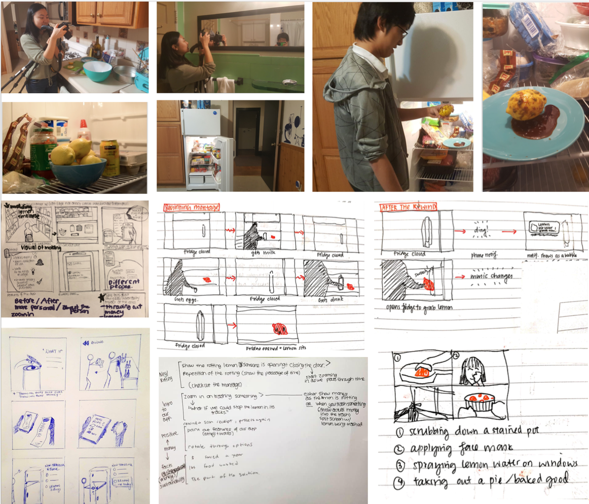
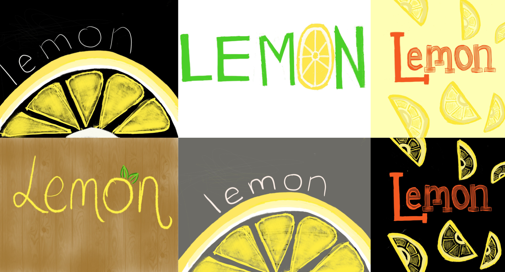
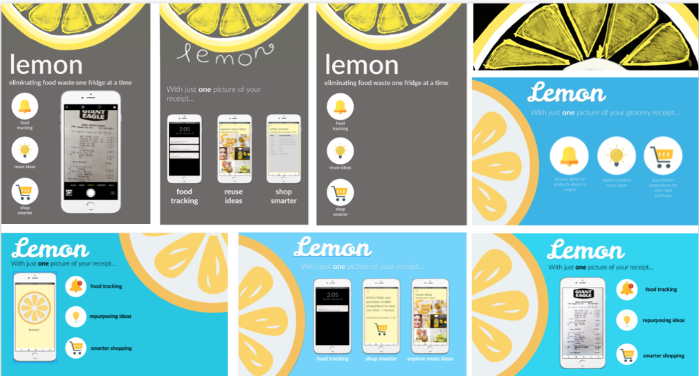
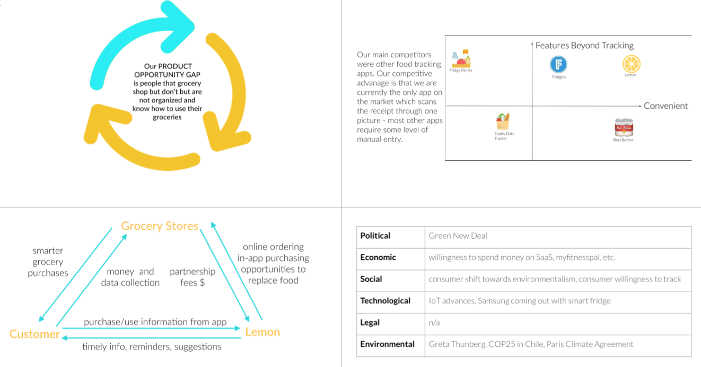

01 Overview
Ron Kang Chew (Information Systems), Shanice Lam (BArch), Abbey Mui (Information Systems)
8 Weeks, Fall 2019
Sketch, Photoshop, Figma, InDesign, iMovie
Branding + Pitch/Presentation Development + Logo/Mobile Design
02 Challenge
Project AskCome up with an innovative digital service for any problem space.
This project was part of my Digital Service Innovation class. We were individually tasked with coming up with digital services to tackle current problems and voted on the top ideas to form teams. For my selected project, I served as a Project Lead - guiding the strategic decisions that my team took. My team focused on the food waste problem.
This class culminated in an investor pitch and valuation by local Pittsburgh leaders. Our team placed third in the pitch competition!
03 Solution
introducing lemon
A mobile application that tackles personal waste with just one picture of your grocery receipt! Lemon has three key features:
01 food tracking
02 repurposing ideas
03 smarter shopping
mobile screen flow

concept poster

app walkthrough

concept video
04 Approach
initial research
Today, food waste is an important problem. It has a major financial impact, impacts food security, and affects the climate and resource conservation.
Food that could be used to feed hungry families is instead sent to landfills, eventually adding up to 8% of global greenhouse gas emissions.

reverse assumptions

restaurant interviews
We first started by trying to reducing waste from a restaurant's perspective. A lot of apps focus on trying to help restaurants give away leftovers at the end of the day. We spoke to buffets, fast food, fresh food, and sit-downs and asked them about their waste/donation habits.

We found that minimizing waste for restaurants may prove difficult.

pivoting to personal waste
We found that produce is the most wasted type of food. Thus, we tried to look at produce waste from the perspective of grocery stores - asking about wasted produce and shopper habits.
From our research, we found that grocers overstock for the proper look and feel of the store. According to Business Insider, the fundamental business model of supermarkets dictates:
01 Stores be fully stocked so customers don't run to competitors.
02 Customers expect perfect, identically shaped produce.
03 Thus, retailers must stock according to customer expectations.
This led us to focus on waste from a personal perspective.


ideation

Grocery Store Interviews


We conducted co-design sessions revolving around an artifact - a plate of spoiled food. The goal was to evoke sentiments associated with the plate. We interviewed 20 candidates and found that 80% of candidates had some issue keeping track of food. We found that consumers buy too much food, throw it away quickly, and pay little attention to waste.

initial concept
Based on the initial insights, we created a paper prototype of an all encompassing platform, taking inspiration from the likes of Blue Apron and Hello Chef. Most people felt the service was promising, but too all encompassing/overwhelming.

iteration
Based on in-class critiques from local professionals, we realized the problem stems from users not understanding expiry dates or when food goes bad. This is when the idea of Lemon, our new service, was born.

storyboarding
We created storyboards and user tested them. The in-fridge smart camera was a huge privacy concern, while a picture of the receipt was the most well received.

concept video storyboarding + production
logo + poster iterations

demo day pitch
Our team placed third at the demo day pitch where we presented to leaders in the Pittsburgh community! We pitched our idea as a freemium model with a paid premium product. We presented a pitch deck, video, and poster four times to a total of 20 investors. We received great advice on how to continue expanding our idea, starting with a pricing structure other than a freemium model. The investors loved our branding and how simple yet effective the idea was!

business analysis
05 Reflection
This project was rewarding for me because this was the first time I really got to lead a team through the entirety of the project, given that it was all my team members' first times taking an HCI class. I also took charge of branding, logo, and visuals, something I typically shy away from. Doing well at the demo was incredible for me and made me feel that I have really taken my practice to the next level! In the future, I would want to flesh out how we make money and also do more primary research/guerilla research to validate market need.